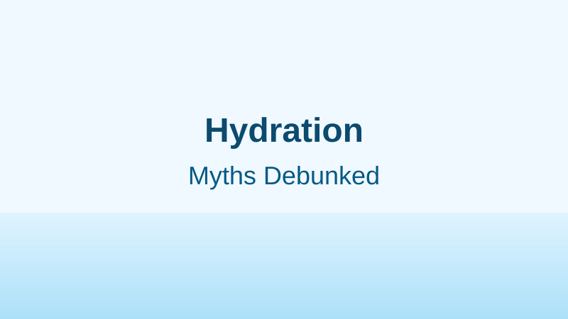
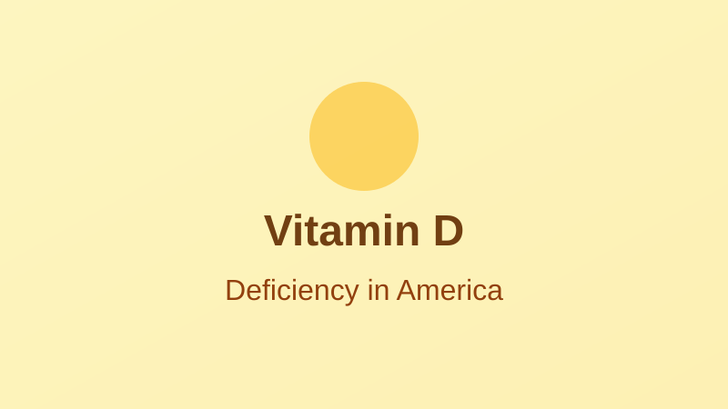

10 Anti-Inflammatory Foods to Add to Your Diet
Chronic inflammation is linked to heart disease, diabetes, and Alzheimer's. Here are the foods with the strongest scientific backing for reducing it — and why they work at the molecular level.

Latest Articles

Intermittent Fasting: What the Science Actually Says
Behind the social media hype, what does the research really show about time-restricted eating?
April 7, 2026 • 8 min read

How Screen Time Affects Your Eyes — and What You Can Do
Americans spend 7+ hours a day on screens. Here's what digital eye strain actually is and what works.
April 9, 2026 • 7 min read

8 Glasses a Day? Common Hydration Myths Debunked by Science
The "8x8 rule" has no clear scientific origin. Here's what research actually shows about hydration needs.
March 22, 2026 • 5 min read

Understanding Heart Health: What Your Cholesterol Numbers Really Mean
Heart disease kills 695,000 Americans a year. Your HDL, LDL, and triglyceride numbers — explained clearly.
March 25, 2026 • 7 min read
Managing Stress and Anxiety: What Actually Works, According to Research
Over 40 million Americans have anxiety disorders. Evidence-based strategies that science supports.
March 28, 2026 • 8 min read

Vitamin D Deficiency in America: Are You Getting Enough?
42% of American adults are deficient in the "sunshine vitamin." Symptoms, risk factors, and solutions.
April 3, 2026 • 7 min read

How Many Steps a Day Do You Really Need? The 10,000-Step Myth, Debunked
The 10,000-step goal came from a 1965 Japanese marketing campaign, not a doctor. Here's what research shows.
April 5, 2026 • 6 min read
Your Gut Microbiome: What It Is and Why It Matters for Your Health
38 trillion microorganisms live in your gut. What they do, and how diet shapes them.
March 18, 2026 • 8 min read
Ultra-Processed Foods: What They Are and Why They're So Hard to Quit
58% of American calorie intake comes from ultra-processed food. Here's what the research says about why it matters.
March 10, 2026 • 7 min read
In-Depth Series


How Body Temperature Affects Sleep Quality
The key role of thermal regulation in deep sleep and memory consolidation.
5 min read
5 Essential Habits for Long-Term Cognitive Health
Actionable, research-backed strategies to keep your mind sharp as you age.
6 min read
Body Temperature and Metabolism: What the Science Says
An overview of emerging research on how core body temperature may influence metabolic rate.
5 min read